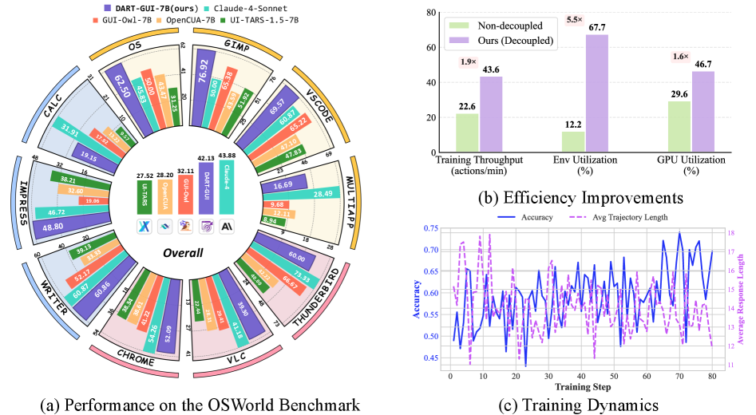

TL;DR
DART 把训练系统解耦成四个异步模块：environment cluster、rollout service、data manager、trainer。引入 rollout-wise sampling、worker 级模型同步、按任务难度动态调整 rollout 数和长度、预收集困难任务成功轨迹、高熵 step 优先训练、truncated importance sampling 缓解 policy mismatch。 系统效率上 rollout GPU utilization 提升 1.6 倍、训练 throughput 提升 1.9 倍、环境利用率提升 5.5 倍。OSWorld 上 DART-GUI-7B 成功率 42.13%，比 base +14.61%，比开源 SOTA +7.34%。
⚠️ 数值主要按论文/技术报告/综述自报口径整理，未声明为第三方独立复现。
0. 论文定位卡
| 路线 | Online RL / OS/Desktop |
|---|---|
| 环境 | Desktop / OS / VM / VNC |
| 动作空间 | mouse / keyboard / drag / hotkey / API or MCP tool |
| 奖励信号 | 环境终局成功、verifier/VLM judge、replay 中的成功轨迹 |
| 优化方式 | SFT warmup + RL/RFT 或系统级闭环优化 |
| 读表口径 | ⚠️ 数值主要按论文/技术报告/综述自报口径整理，未声明为第三方独立复现。 |
先看这张卡可以避免误读：GUI Agent RL 论文经常把“模型能力”“环境系统”“奖励设计”“数据生成”混在一起讨论。这里把它拆成环境、动作空间、奖励信号和优化方式四个轴，方便判断论文到底贡献在哪里。
1. 框架图与读图指南

读图顺序
- 先看输入端：桌面截图、窗口状态、文件系统或应用状态，通常通过 VM/VNC/系统 API 获取。
- 再看中间模块：rollout worker 在浏览器、VM 或 Android emulator 中执行策略，记录截图、动作、状态和终局结果。
- 接着看反馈回路：检查文件、数据库、应用 UI、终端输出或系统状态是否达到任务要求，这一项如何回到策略、价值函数、reward model 或数据筛选器。
- 最后看输出端：鼠标点击、键盘输入、拖拽、快捷键，以及部分 API/MCP/tool call；这决定论文结果到底是在单步 grounding、完整 trajectory 还是系统吞吐上成立。
读这类图不要只看模块名，要沿着 observation → action → reward/update 的方向追踪数据流。只要能指出 reward 或 verifier 是在哪里产生的、又如何回到策略更新，就基本抓住了论文的核心。
2. 要解决的问题
GUI RL 的主要瓶颈不是 GPU，而是多轮 GUI 环境 rollout 慢、有效交互数据少。
换成 GUI agent 的语言，这个问题通常落在三件事上：界面状态部分可观测、正确反馈稀疏且延迟、静态示范无法覆盖真实软件变化。论文的价值就在于把这些问题中的一个或多个转成可训练的闭环信号。
如果只用 SFT 或行为克隆，模型学到的是“在数据集截图上下一步该怎么点”；而 GUI Agent 真正部署时会遇到状态漂移、异步加载、误点回退、任务参数变化和界面版本变化。本文所属路线试图回答的是：如何让模型从环境反馈、可验证标签或合成轨迹里继续改进，而不是停留在一次性模仿。
3. 任务形式：输入、动作、奖励
| 观察 | 桌面截图、窗口状态、文件系统或应用状态，通常通过 VM/VNC/系统 API 获取。 |
|---|---|
| 动作 | 鼠标点击、键盘输入、拖拽、快捷键，以及部分 API/MCP/tool call。 |
| 奖励 | 检查文件、数据库、应用 UI、终端输出或系统状态是否达到任务要求。 |
这个表是读 GUI Agent RL 论文最重要的入口：只要弄清楚模型看到了什么、能做什么、奖励从哪里来，就能判断它是算法贡献、环境贡献、奖励贡献还是系统贡献。
4. 训练闭环怎么跑
- 任务采样器选择一批当前模型有机会学会的 GUI/Web/Mobile 任务。
- rollout worker 在浏览器、VM 或 Android emulator 中执行策略，记录截图、动作、状态和终局结果。
- verifier / reward model / 环境脚本把轨迹转成成功、失败或过程进展信号。
- trainer 用 GRPO/AWR/PPO/自定义策略优化更新模型，同时 replay/filtering 保留稀有成功轨迹。
这条闭环是理解论文的主线。无论它叫 GRPO、DPO、AEPO、MCTS、world model 还是 semi-online，最终都要把“模型输出的动作”转换成“可执行状态变化”，再把状态变化转换成“可训练信号”。
5. 方法与架构怎么跑
- DART-GUI 认为 GUI RL 最大瓶颈常在环境 I/O：浏览器、VM、模拟器、截图和状态检查都很慢。把模型训练和环境 rollout 绑在一起会让 GPU 等环境。
- data manager 根据任务难度、轨迹质量和 step entropy 决定哪些样本优先训练。困难任务会分配更多 rollout 或更长 horizon，高熵步骤会得到更高训练优先级。
- 在线 GUI RL 不是只要算法对就能跑起来。没有异步 rollout、轨迹筛选和 worker 同步，大量时间会浪费在等待环境。
5.1 核心贡献是系统解耦，不是新 reward
DART-GUI 认为 GUI RL 最大瓶颈常在环境 I/O：浏览器、VM、模拟器、截图和状态检查都很慢。把模型训练和环境 rollout 绑在一起会让 GPU 等环境。
它把系统拆成 environment cluster、rollout service、data manager 和 trainer 四个异步模块。
5.2 Adaptive data curation
data manager 根据任务难度、轨迹质量和 step entropy 决定哪些样本优先训练。困难任务会分配更多 rollout 或更长 horizon，高熵步骤会得到更高训练优先级。
旧策略轨迹和新策略之间有 mismatch，所以它使用 truncated importance sampling 之类机制减轻 off-policy 偏差。
5.3 为什么对 GUI RL 重要
在线 GUI RL 不是只要算法对就能跑起来。没有异步 rollout、轨迹筛选和 worker 同步，大量时间会浪费在等待环境。
DART-GUI 的价值是把 GUI RL 从小规模实验推进到可持续采样的训练架构。
因此，这篇论文不是简单地“让大模型点屏幕”，而是围绕 observation-action-reward 契约重写训练闭环：先让动作可执行，再让反馈可验证，最后让策略能从成功和失败中更新。
5.4 关键中间变量
读方法时要特别盯住中间变量：轨迹是按 step 存、按 episode 存，还是按候选动作组存？奖励是只在终局出现，还是每一步都有 progress？模型更新时用的是整条轨迹的相对优势、单步坐标误差、偏好对，还是 value/Q head？这些细节决定了论文能否处理长任务和稀疏奖励。
5.5 为什么这种设计能解决原问题
核心逻辑是把原本不可微、不可直接监督的 GUI 成功条件拆成更接近训练信号的形式：要么用规则/verifier 把成功自动判出来，要么用 reward model 学过程进展，要么用世界模型/搜索生成更多成功轨迹，要么用层级结构把几十步任务拆成几个短子目标。
6. 训练、奖励与数据流
- 在线阶段让当前策略真实或半真实地执行任务，把环境返回的成功/失败和过程状态写入 replay buffer。
- 训练一般需要课程学习、positive replay、任务过滤和异步 rollout，否则大量失败轨迹会吞掉训练信号。
读实验时要特别注意 reward 口径：有的论文评估单步坐标，有的评估整条任务成功，有的只报告系统吞吐或数据合成质量。不同口径不能直接相加或横向混算。
7. 关键设计与创新点
- 把环境交互纳入训练闭环，直接优化真实多轮成功率，而不是只优化离线动作匹配。
这些创新点的共同目标，是把 GUI 交互从一次性 prompt 调用变成可迭代优化的训练系统。
8. 实验怎么读
系统效率上 rollout GPU utilization 提升 1.6 倍、训练 throughput 提升 1.9 倍、环境利用率提升 5.5 倍。OSWorld 上 DART-GUI-7B 成功率 42.13%，比 base +14.61%，比开源 SOTA +7.34%。
| 项目 | 口径 | 指标 | 结论/注意事项 |
|---|---|---|---|
| 主 benchmark | OSWorld / desktop CUA benchmark | 任务成功率 / grounding accuracy / 系统吞吐 | 系统效率上 rollout GPU utilization 提升 1.6 倍、训练 throughput 提升 1.9 倍、环境利用率提升 5.5 倍。OSWorld 上 DART-GUI-7B 成功率 42.13%，比 base +14.61%，比开源 SOTA +7.34%。 |
| 对照基线 | SFT、BC、prompting、闭源 VLM 或同尺寸开源模型 | 相同任务口径下比较 | 不同论文的环境和任务集合不同，不能把数值直接跨表相加。 |
| 可信度 | 作者自评或综述转述 | ⚠️ / 待核 | ⚠️ 数值主要按论文/技术报告/综述自报口径整理，未声明为第三方独立复现。 |
这类实验通常需要同时看三组数字：第一是任务成功率或 grounding accuracy；第二是与 SFT、BC、prompting、GPT-4V/闭源模型或开源基线的对比；第三是环境成本，例如 rollout 速度、样本数量、标注成本和并行规模。
尤其要避免一个常见误读：ScreenSpot/grounding accuracy、WebArena success rate、AndroidWorld task success、OSWorld desktop success、world-model rollout speed 不是同一个指标。本文页面保留原论文或综述的原始口径，不把它们强行换算。
9. 常见误读
- 不要只看最终成功率，还要看 rollout 成本和 verifier 可靠性；在线 RL 的有效性高度依赖环境吞吐。
- 读 DART-GUI: Decoupled Training and Adaptive Data Curation 时，应先确认它报告的是作者自评、技术报告结果还是第三方 benchmark 结果。
10. 复现或落地时要准备什么
- 先固定 action schema，并写一个能把模型输出解析成真实 GUI 操作的 adapter。
- 准备 verifier：至少要能判断终局成功；如果是 grounding 论文，还要能计算坐标/区域奖励。
- Desktop 任务需要 VM/VNC/截图通道，并把文件系统或应用状态检查写成可重复 verifier。
- 在线训练要异步化 rollout 与 learner，并维护 replay/filtering，否则失败轨迹会占满 batch。
如果只能先复现一小部分，建议优先复现 action schema、verifier 和一组可重置任务；没有这三件事，后续 RL 指标很难可信。
11. 局限与读法
- 在线 rollout 成本高，浏览器、VM、ADB 和截图 I/O 往往限制可扩展性。
- 自动 verifier 或 VLM judge 一旦误判，策略可能学习 reward hacking。
- 桌面任务环境重、状态复杂，评测结果容易受 VM 配置、软件版本和任务初始化影响。
它属于闭环自我改进路线：让 agent 在环境里行动、失败、修正，而不是停留在离线示范模仿。
和参考站的可信度规则一致，本页把作者自评、技术报告自报和综述转述都按 ⚠️ 处理；只有基准维护方统一评测或第三方复现才适合当作更强证据。
来源
本页依据 GUI Agent RL 综述、论文摘要/公开页面和站内总报告整理；数值优先保留论文自报口径，未做第三方复现实验。参考站体例来自具身智能学习站的论文细读页面，例如 RT-2 与 SimpleVLA-RL 细读。